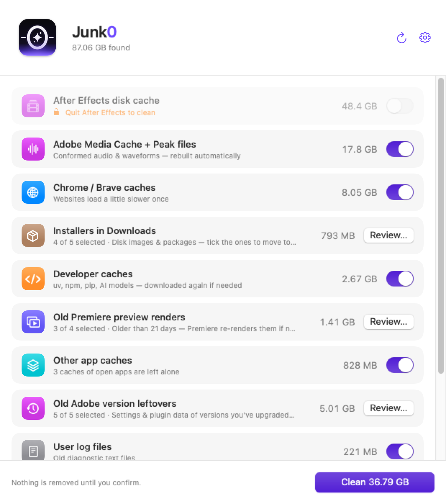
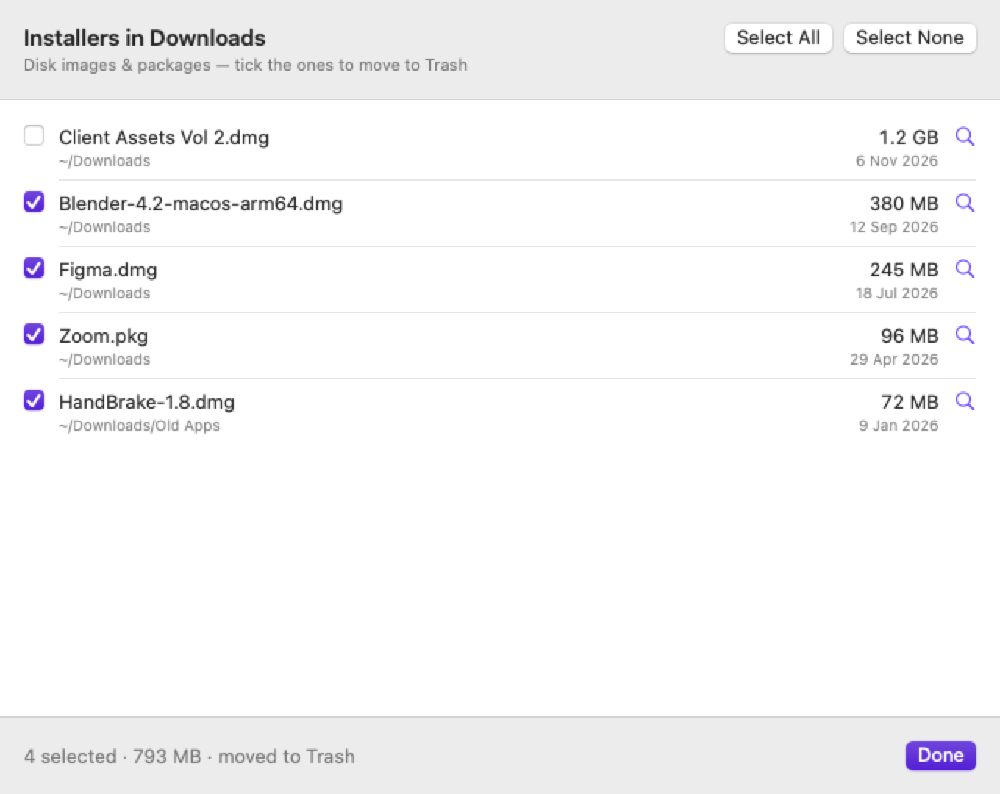
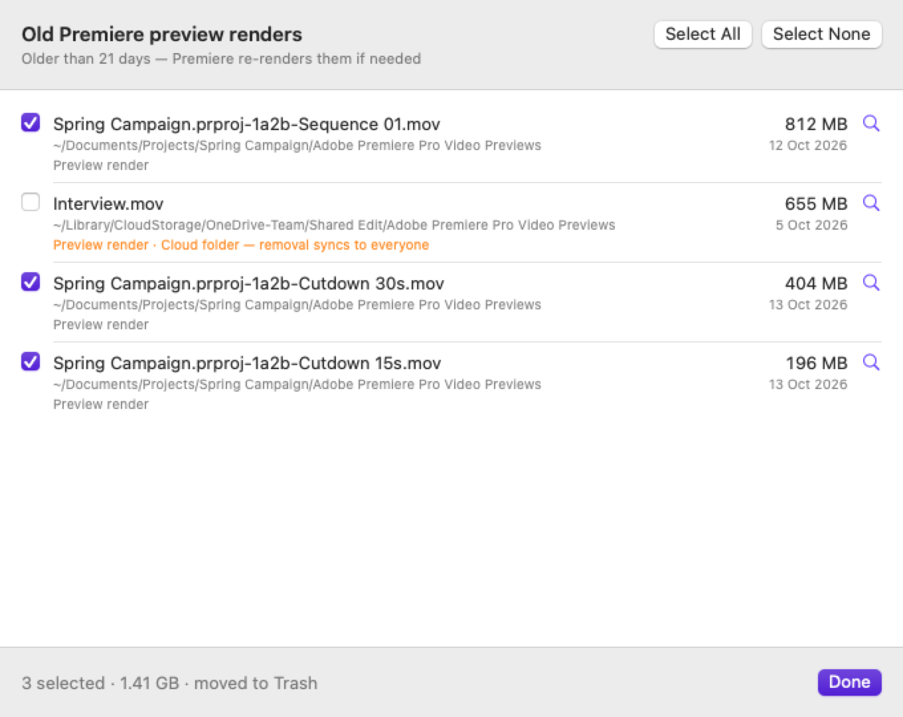
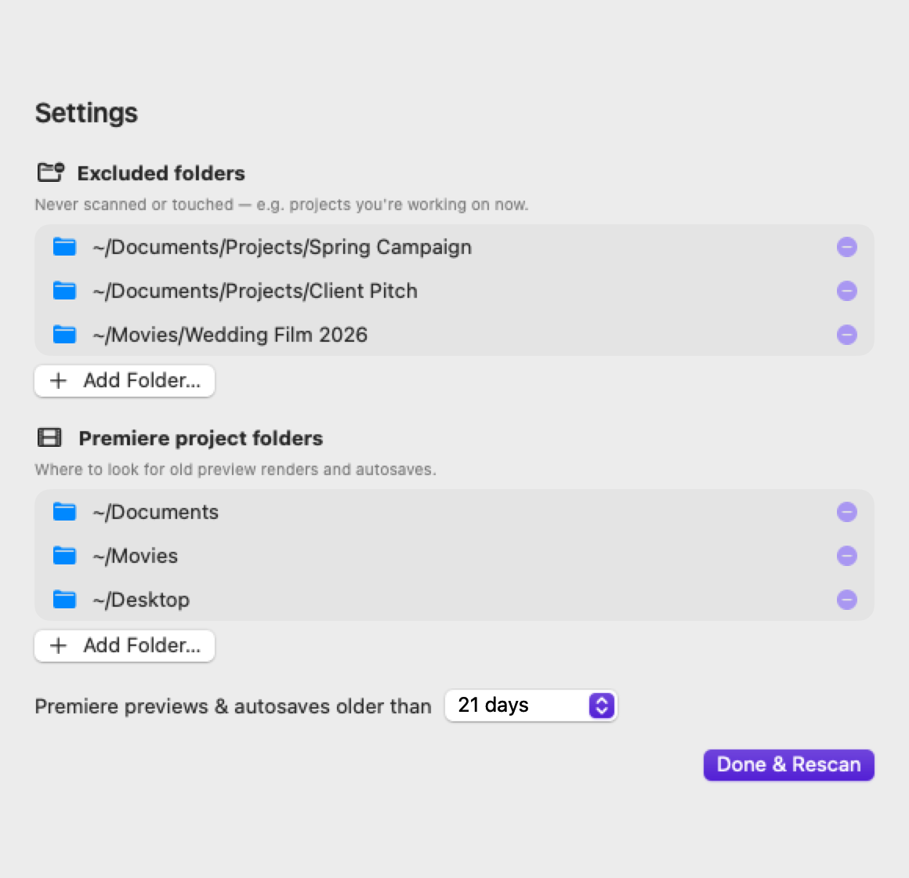
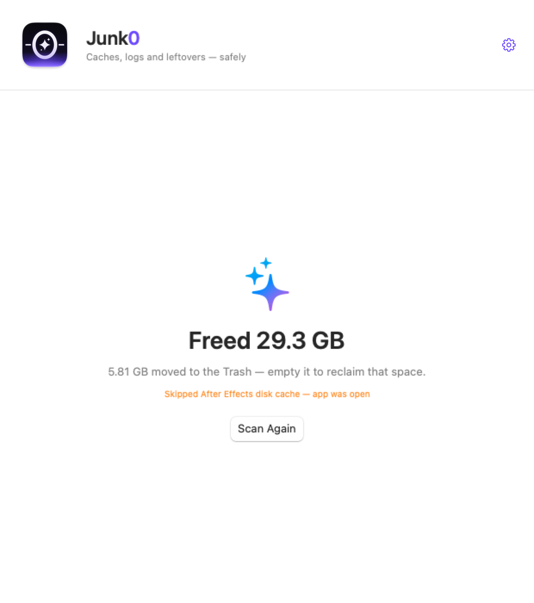

A small, native Mac app that finds the caches, logs and leftovers filling your drive — and removes only what's safe, only after you say so.
Free & open source · macOS 14 or later · Apple Silicon & Intel

Most cleaners ask you to trust them. Junk0 shows you everything and lets you decide.
Scanning is read-only. The confirmation tells you exactly what is deleted and what goes to the Trash.
Caches of running apps are skipped automatically, and checked again right before cleaning.
Installers, old versions and Premiere files are picked one by one in a review window — and stay recoverable.
Working on three projects? Add them to the excluded list and the app will never look inside.
Finds After Effects caches, Media Cache, and Premiere previews & autosaves older than the age you choose.
Native SwiftUI. No network, no analytics, no admin password. Nothing leaves your Mac.
Real files get their own review window. Tick, check in Finder, decide.




Every rule is documented in the open. Read the full safety model →
| Group | How | Notes |
|---|---|---|
| After Effects disk cache & logs | Deleted | Locked while After Effects is open |
| Adobe Media Cache & Peak files | Deleted | Locked while Adobe video apps are open |
| App caches | Deleted | Skips Apple system caches and open apps |
| Browser & Teams caches | Deleted | Logins, bookmarks and history are kept |
| Logs & developer caches | Deleted | Regenerated or re-downloaded when needed |
| Installers in Downloads | Trash | You pick each file; none pre-selected |
| Older Adobe version leftovers | Trash | Newest version always kept |
| Old Premiere previews & autosaves | Trash | Older than 14–90 days, your choice |
| Unusual file names | Trash | Listed separately, never pre-selected |
The app isn't notarized by Apple yet, so macOS asks you to approve it once.